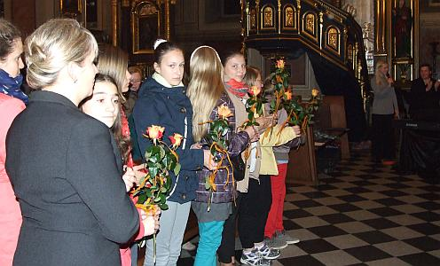

A tymczasem w Cameracie...
.
2013-10-01
Jest godz.16.50. Zaczynamy przygotowywać kościół do koncertu.
Wystąpią:
Połączone chóry pod dyr. Izabeli SZOTY:
CAMERATA z Wieliczki - przyg. Izabela SZOTA
IM. JANA PAWŁA II ze Strumian - przyg. Piotr PIWKO
Kwartet smyczkowy ARCHI:
Anna HARA-PIÓRO – skrzypce I
Bogusława ZIEGELHEIM – skrzypce II
Grażyna PIECHOWSKA – altówka
Agata SANCHEZ-MARTOS – wiolonczela
Leszek SURMACZ – organy
Agnieszka KORCZYŃSKA – fortepian
Anna KOZŁOWSKA – słowo
Chóry występują jako pierwsze. Akompaniują nam Agnieszka Korczyńska i Leszek Surmacz.

koniec koncertu.
Dostaliśmy wielkie brawa, więc na bis Barka – chór śpiewa na głosy a „kościół” z panią dyrygentką.

© Stowarzyszenie Muzyczne Chór Camerata Wieliczka
Projekt i wykonanie:  Prowadzenie strony: Małgorzata Wysocka-Cebula
Prowadzenie strony: Małgorzata Wysocka-Cebula